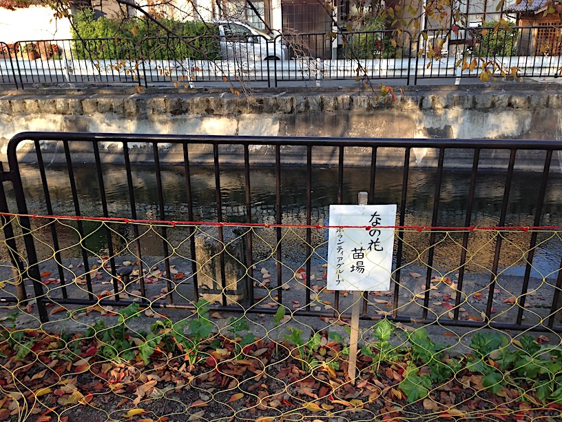

Track embed
Walking the Lake Biwa Canal
This block reads a GPX URL from its own data-tilia-gpx-url attribute and renders the track without any viewer-specific wrapper.
This sample treats Tilia as an embeddable library rather than as the standalone viewer.
Each content block owns its own map instance, and only the data-* URLs change.
That makes the same template reusable in a CMS or blog page.
Track embed
This block reads a GPX URL from its own data-tilia-gpx-url attribute and renders the track without any viewer-specific wrapper.

Photo embed
The image element itself carries the source URL in data-tilia-photo-url.
Tilia reads the photo file and places its marker next to the image.
Photo embed
This second image keeps its own data-tilia-photo-url value, but also adds a card-level
data-tilia-gpx-url. Tilia loads the track first and then infers the photo location from the
GPX timeline when the image itself does not carry GPS coordinates. Because EXIF timestamps do not store
their timezone, this sample sets the photo time mode to +09:00 in the map initialization
code so the photo timestamp is interpreted against the GPX track in the intended timezone.